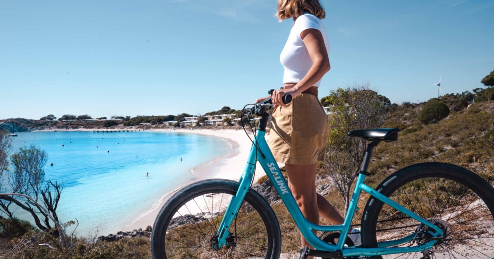
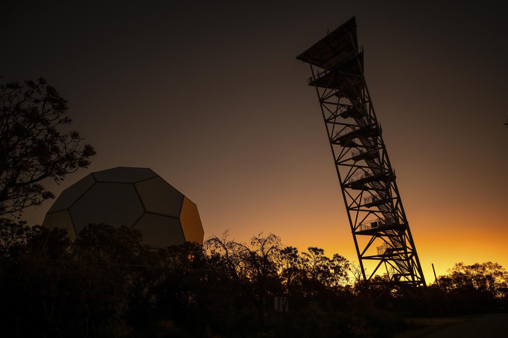
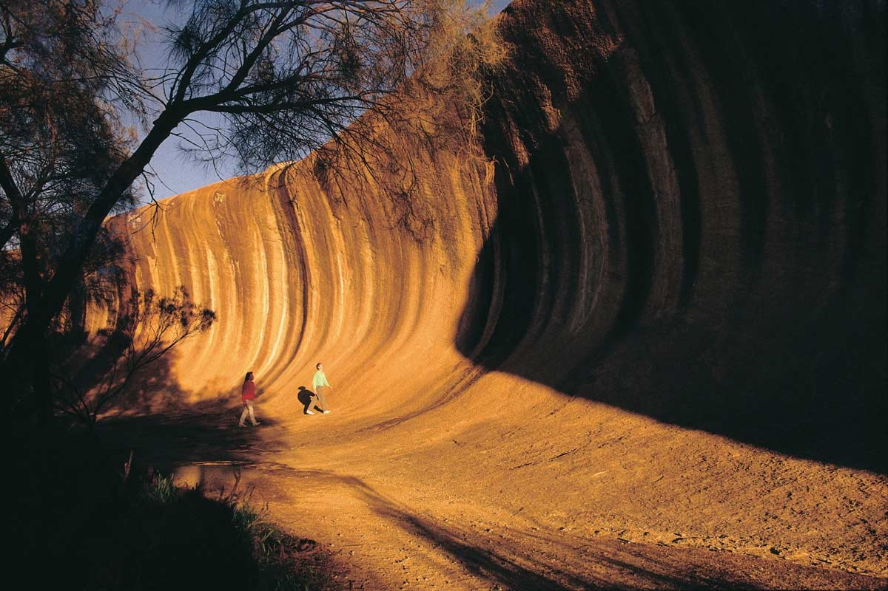
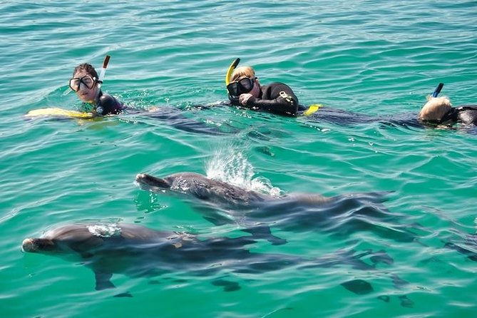
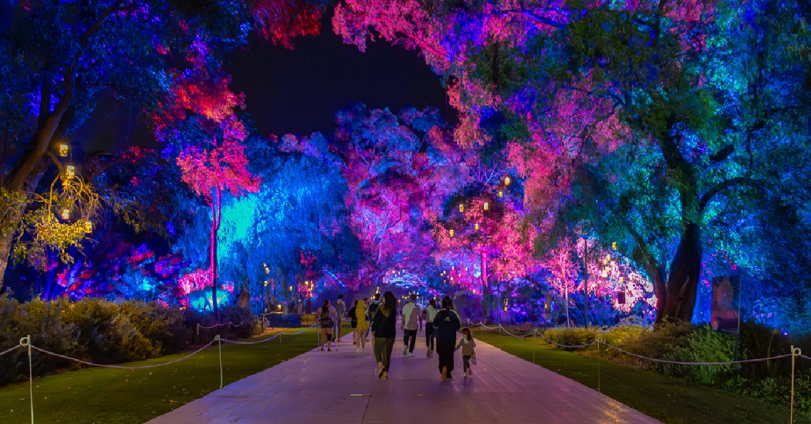

-
Turul Deșertului Pinnacles și Observarea Stelelor
Marți, 29 octombrie 2024, Perth
Bucură-te de o cină BBQ în inima deșertului și admiră apusul peste ocean. Vei avea ocazia să vezi cerul spectaculos pe timp de noapte cu telescoape și binocluri astronomice, privind Calea Lactee și planetele.

-
Feribot și Închiriere de Biciclete SeaLink Rottnest
Miercuri, 30 octombrie 2024, Perth
Evadează din orașul Fremantle și descoperă Insula Rottnest cu bicicleta. Beneficiază de un feribot de întoarcere în aceeași zi, combinat cu închirierea unei biciclete și explorează cele peste 63 de plaje din Rottnest.
 -
Experiența de Noapte la Gravity Discovery Centre
Joi, 31 octombrie 2024, Perth
Rezervă un bilet pentru intrare pe timp de noapte la Gravity Discovery Centre pentru a participa la o prezentare condusă de un astronom și pentru a experimenta observarea stelelor. Vei putea urmări un tur cu laser al cerului nocturn pentru a vedea constelațiile.
 -
Tur Cultural Wave Rock și York cu un Ghid
Vineri, 1 noiembrie 2024, Perth
Wave Rock este o formațiune stâncoasă impresionantă, situată în apropierea orașului Hyden, la aproximativ 340 km sud-est de Perth York este unul dintre cele mai vechi orașe din Australia de Vest și se află la aproximativ 100 km est de Perth.
 -
Tur de Înot cu Delfinii Sălbatici
Sâmbătă, 2 noiembrie 2024, Perth
Împlinește-ți visul de a înota cu delfinii în sălbăticie și trăiește o experiență de neuitat, la doar câteva minute de Perth. Descoperă reperele naturale din Western Australia într-o excursie de o zi din Perth. Vizitează York, Wave Rock, Peștera lui Mulka și multe altele. Vei savura un prânz în stil țărănesc.
 -
Festivalul de Lumină Kings Park
Duminica, 3 noiembrie 2024, Perth
Participă la Festivalul de Lumină Kings Park, unde aleile și grădinile sunt iluminate spectaculos. Evenimentul include instalații de artă luminoasă, spectacole live și activități interactive pentru toate vârstele. Festivalul celebrează frumusețea naturii din Australia de Vest.
